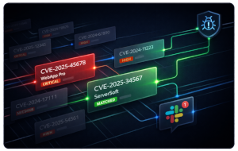

CVEalert.io ~ CVE monitoring for your stack
Níže je přehled služeb, které poskytuji jako nezávislý specialista na ofenzivní bezpečnost.
Všechny zakázky jsou praktické a manuální a přizpůsobené reálným útočným scénářům.
Deep, manual penetration testing focused on how modern web applications are actually attacked. I identify vulnerabilities that automated scanners and checklist-based testing routinely miss, including complex business logic flaws and chained attack paths.
A comprehensive, attacker-driven assessment of your application architecture, code, and exposed attack surface. These audits go beyond vulnerability discovery and focus on systemic weaknesses, risky design decisions, and high-impact exploitation paths.
Manual security review of application source code with a focus on vulnerability patterns, insecure logic, and exploit primitives.
I concentrate on issues that are realistically exploitable, not theoretical or style-related findings.
Security assessment of CI/CD pipelines, build processes, and deployment workflows. I look for attack paths that allow source code tampering, secret exposure, artifact poisoning, or unauthorized production access.
Design, validation, and tuning of application security testing tools within real development environments. I help teams use SAST, DAST, and SCA effectively, without drowning in false positives
or missing real risk.
Attacker-centric threat modeling based on real-world exploitation techniques and current attack trends. The goal is to understand how your system can be abused in practice and to prioritize risks that actually matter.
Security work doesn’t always fit neatly into predefined services. If you need a tailored assessment, a focused deep dive, or hands-on workshops for engineers, feel free to reach out and we’ll design an engagement that makes sense.